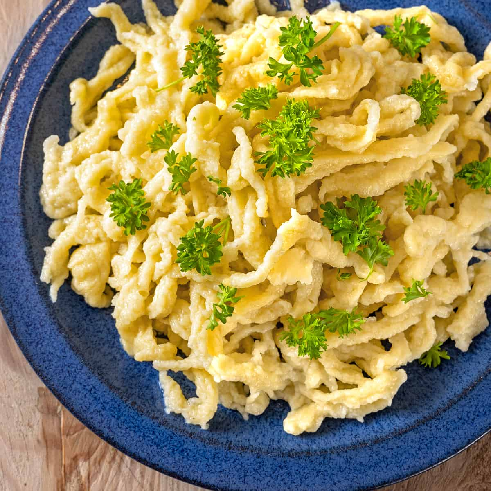

Spätzle

Spätzle ganz einfach
Spätzle ist die schwäbische Verkleinerungsform von Spatz und bedeutet möglicherweise „Sperling“ oder „Batzen, Klumpen“.
Zutaten
- 3 Stk Eier (Größe M)
- 125 ml Wasser (lauwarm)
- 1 TL Salz
- 250 g Mehl (griffig, Type 480)
- 1 Prise Muskatnuss
Zubereitung
- Für den Spätzleteig die Eier, Wasser, Salz und Muskatnuss mit einem Kochlöffel verrühren, nach und nach das Mehl einarbeiten.
- Mit dem Kochlöffel von Hand schlagen, bis der Teig schön glatt ist. Er muss fest, aber leicht fließend sein. Ist der Teig zu dünn, gibt man etwas Mehl dazu.
- Danach Spätzle mit Hilfe eines Spätzlehobels (oder Spätzlepresse oder Spätzleschaber) in reichlich kochendes Wasser schaben und nach ca. 2-4 Minuten herausnehmen bzw. mit dem Schaumlöffel abschöpfen, wenn sie an der Oberfläche schwimmen.
- Sofern man die Spätzle nicht sofort weiterverarbeitet, mit kaltem Wasser abschrecken und abtropfen lassen. Wenn man die Spätzle zum Beispiel sofort in einer Pfanne mit Butter anröstet ist das Abschrecken nicht notwendig.
Tipps
- Die fertigen Spätzle mit Petersilie bestreuen und servieren - dazu passt grüner Blattsalat.
- Eine perfekte Beilage sind Spätzle für Gulasch, Rouladen, Schweins- oder Rinderbraten.
- Den Spätzleteig kann man nach Belieben verfeinern, wenn man zum Beispiel Parmesan, Gewürze wie Paprika oder Chili unter den Teig mischt. Oder man gibt gehackte Kräuter wie Bärlauch, Petersilie, Dill oder Schnittlauch in den Teig.
- Mineralwasser anstelle von normalem Wasser macht den Teig schön fluffig. Man kann das Wasser auch durch Milch ersetzen.
- Nicht benötigten, unverarbeiteten Spätzleteig kann man auch einfrieren. Dann bei Bedarf im Kühlschrank auftauen und wie gewohnt verarbeiten.